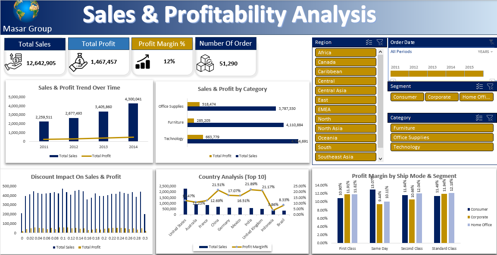

Analytics projects focused on finding what drives profit, service quality, and failures.
Excel · Sales Analytics
Global Superstore Sales Dashboard
An interactive Excel dashboard on four years of global retail orders. It shows where the business grows and where it loses money.
$12.6M sales$1.47M profit11.6% margin
Question
Which categories, regions and countries make profit, and which lose it?
Data
51,290 order lines, 25,035 orders and 4,873 customers, from 2011 to 2014. No missing values or duplicates.
Insights
Sales grew every year, from $2.26M to $4.30M (+90%), while margin stayed near 11 to 12%.
Furniture has $4.1M in sales but only a 6.9% margin. Technology earns 14% and the most profit ($664K).
Tables is the only sub-category that loses money: -$64K on $757K of sales.
Turkey (-$98K), Nigeria (-$81K) and the Netherlands (-$41K) are the biggest loss-making countries.
Southeast Asia earns only 2% margin on $884K of sales. North Asia earns 19.5%.
24% of order lines lose money, adding up to -$921K.
Action
Reprice or review the Tables line.
Audit pricing and shipping costs in Turkey, Nigeria and the Netherlands.
Put more marketing into Technology (Copiers, Phones) and the high-margin regions: North Asia, Central Asia and North.
Find why Southeast Asia and EMEA earn so little margin.

Slicers filter every chart by region, segment, category and date.ExcelPivot TablesSlicersPower BI · Operations Analytics
Call Center Workforce and Service Level Analysis
A Power BI report on contact center operations. It tracks service level, abandonment, handle time and staffing across sites, channels and business units.
2.81M contacts offered5.3% abandoned82.5% avg service level
Question
Is the contact center staffed well enough to meet its service targets, and where does it fall short?
Data
10,000 interval records and 30 columns, from 2021 to 2026. It covers 58 sites in 3 regions, 3 channels (voice, chat, email) and 5 business units. No missing values or duplicates, but the date column mixed two formats and had to be standardized.
Insights
Of 2.81M contacts offered, 2.66M were handled and 149K were abandoned (5.3%).
Average service level was 82.5%, but only 61% of intervals reached 80%.
Intervals with no spare agents (scheduled equal to required) abandoned 10.5% of contacts. With one extra agent the rate halved to 5.1%.
Actual volume ran 1.8% above the forecast.
Regions, channels and business units perform almost the same.
Dashboard screenshot goes here
Power BIWorkforce AnalyticsKPI ReportingExcel · SQL · Power BI
FLM Machine Failure Analysis
Data Analyst track project at Masar. Cleaned and analyzed machine failure records to find the most frequent faults and recurring problems, then presented the trends in a Power BI dashboard.
Dashboard screenshot goes here
Data CleaningFailure TrendsDashboard
Skills
Tools and methods I use
BI & Visualization
Power BIExcelPivot TablesSlicersDashboard DesignData Visualization
Databases & Development
SQLSQL ServerMySQLEntity FrameworkC#ASP.NET MVC
Analytics
Data CleaningKPI ReportingProfitability AnalysisWorkforce AnalyticsFailure Analysis
Professional Skills
Problem SolvingSelf-LearningSelf-MotivatedTeamworkCommunication
About
An engineering mindset applied to business data
I hold a BSc in Electrical Engineering (Communications) from Al-Azhar University and a Professional Diploma in Web and Mobile Development from ITI. In 2026 I completed the Data Analyst track at Masar, working with Excel, SQL, and Power BI.
My projects cover data cleaning, exploratory analysis, KPI reporting, and dashboard development. I enjoy turning raw data into clear insights that help teams make confident, data-driven decisions.